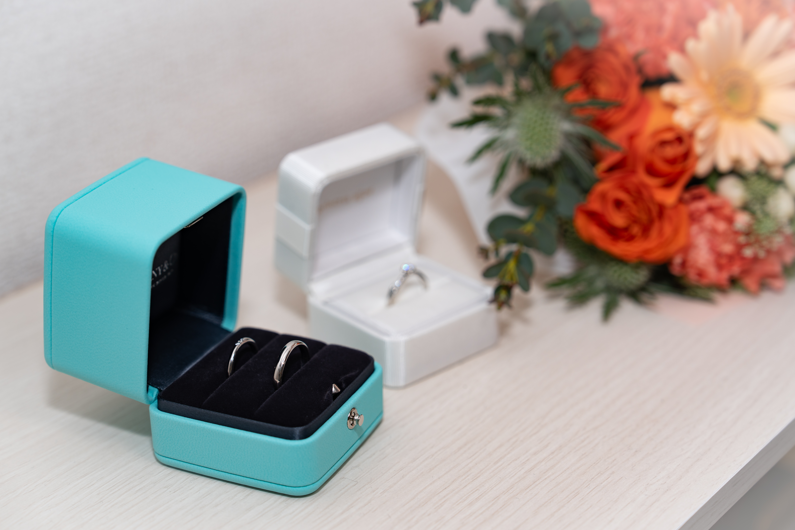
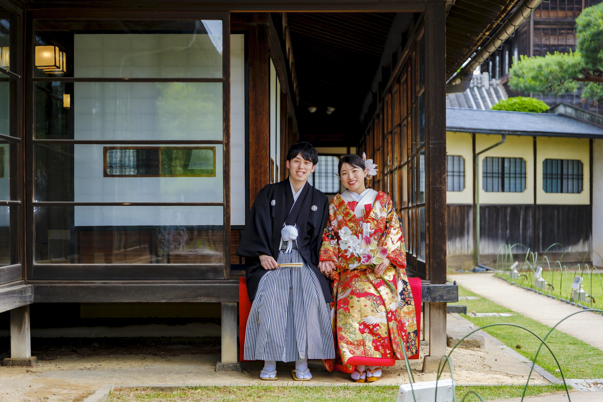

WEDDING SPECIAL QUIZ
としあん結婚式
事前クイズ

あなたは二人のことを
どれだけ知っていますか？
結婚式前の予習としてぜひ挑戦してみてください！
STEP 1
基礎編クイズ
結婚式前に知っておきたい5問に挑戦！ これで当日の予習はばっちりです。
STEP 2
応用編クイズ
二人の好きなものから思い出話まで、ちょっとマニアックな問題も出題！解説を読んでおくと、当日の楽しみが少し増えるかも・・・？
※基礎編を完了すると解放されます
基礎編クイズ
1 / 5
20%
Q1
BASIC QUIZ COMPLETE
準備万端！
基礎編の正解数
0
/ 5

✨ 応用編が解放されました！
さらに新郎新婦のことを知りたい人向けの応用編を用意しました！
ランダムに5問出題されるのでよかったらぜひ挑戦してみてください！
APPLIED QUIZ COMPLETE
応用編の正解数
0 / 5